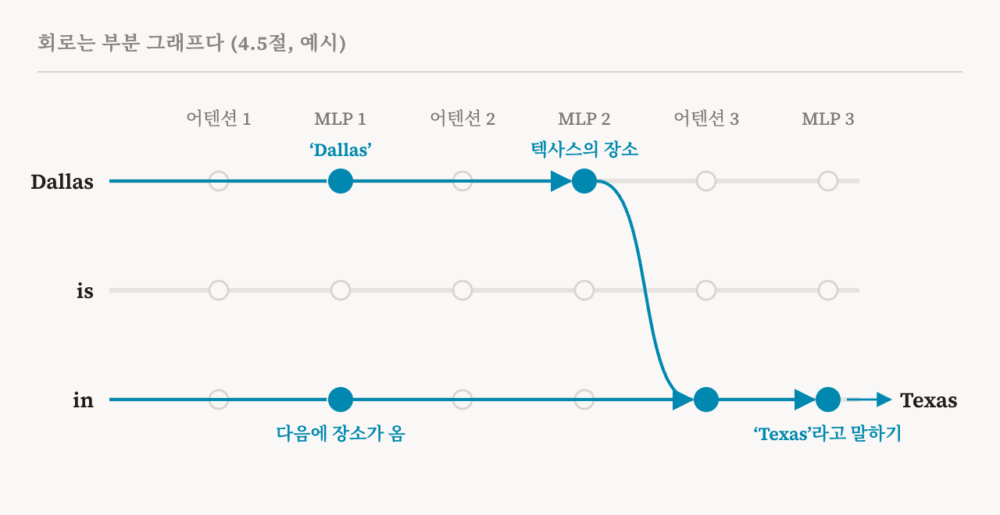
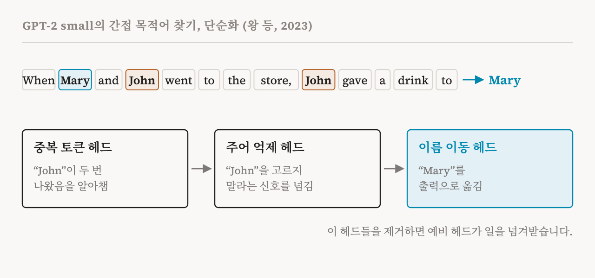

4편과 5편은 두 종류의 벽돌을 마련했습니다. 하나는 트랜스포머가 계산에 쓰는 구성 요소, 곧 잔차 스트림에서 읽고 거기에 더하는 어텐션 헤드와 MLP입니다. 다른 하나는 무엇이 표현되어 있는지 말할 때 쓰는 단위, 곧 뉴런과 더 일반적으로는 특징입니다. 이번 편은 이 둘을 합칩니다. 이 책의 4.5절(25–26쪽)을 다루는데, 이 절은 회로라는 개념과 회로 연구의 두 갈래를 소개합니다.
메커니즘과 회로
이 책은 모델 안에서 특정한 행동을 만들어 내는 짜임새를 메커니즘(mechanism)이라고 부릅니다. 활성값, 그 안에서 무언가를 나타내는 단위, 그리고 거기에 가해지는 변환을 한데 묶어 부르는 말입니다. 메커니즘을 찾아내고 이해하는 것이 기계적 해석 가능성의 중심 목표입니다.
메커니즘을 설명하는 흔한 방법이 회로(circuit)입니다. 모델이 어떤 입력 하나에 대해 계산하는 모든 것을 그래프로 늘어놓는다고 상상해 봅시다. 각 노드는 어떤 층의 어텐션 모듈이나 MLP 같은 구성 요소이거나, 특징 같은 표현 단위입니다. 각 화살표는 한 노드에서 다른 노드로 정보가 흐르거나, 흐르는 도중에 변환되는 것을 나타냅니다. 정보는 층을 따라 앞으로만 흐르므로 이 그래프에는 고리가 없습니다. 이 책의 용어로는 방향성 비순환 그래프(directed acyclic graph)입니다.
회로는 이 그래프의 부분 그래프입니다. 함께 특정한 계산이나 행동을 수행하는 노드와 화살표를 골라낸 것이고, 나머지는 모두 뺍니다. 이렇게 골라낸 것이 그 메커니즘에 대한 설명이 됩니다.

핵심은 빼는 데 있습니다. 완전한 모델에는 숫자가 수십억 개 있고, 계산 그래프도 거대합니다. 좋은 회로는 이 행동에 대해서는 그 그래프의 작은 부분이 중요한 일을 한다고 말하고, 각 부분이 무엇을 하는지 말합니다. 그래서 회로는 모델을 그대로 옮겨 놓은 것이 아니라, 사람이 따라갈 수 있는 설명이 됩니다.
이 책이 드는 두 가지 예
이 책은 예시 상자에서 두 종류의 회로를 듭니다. 첫째는 유도 헤드 회로(induction head circuit)입니다. 서로 다른 층에 있는 두 어텐션 헤드가 협력해서, 모델이 같은 텍스트 앞부분에서 본 패턴을 이어 가게 합니다. 텍스트에 "Harry Potter"가 나왔고 나중에 "Harry"가 다시 나오면, 유도 회로는 "Potter"를 예측하도록 돕습니다. 이 메커니즘은 맥락 내 학습(in-context learning), 곧 모델이 눈앞의 텍스트에서 패턴을 알아채는 능력의 상당 부분을 떠받치는 것으로 여겨집니다. 19편 전체가 이 이야기입니다.
둘째는 QK 회로입니다. 4편의 쿼리와 키에서 이름을 따왔습니다. 어텐션 헤드의 쿼리와 키가 어떻게 상호작용해서, 그 헤드가 앞선 위치 가운데 어디에 우선순위를 두는지 정하는지를 설명합니다. 이것을 연구하면 헤드가 왜 그곳을 보는지 알 수 있습니다.
능력 회로
이 책은 회로 연구를 서로 보완하는 두 갈래로 나눕니다. 첫째 갈래는 우와 바레즈(Wu & Barez)의 2026년 논문을 따라 능력 회로 찾기(capability circuit discovery)라고 부릅니다. 모델의 어떤 행동이나 능력을 재현하기에 충분한, 가장 작은 구성 요소의 집합을 찾는 작업입니다. 구성 요소는 특정한 어텐션 헤드나 MLP 층 같은 구조적 단위입니다.
이 방법은 먼저 그 능력을, 그 능력을 써야 풀 수 있는 질의들의 데이터셋으로 정의합니다. 찾아낸 회로만 남기고 모델의 나머지를 제거하거나 무력화했을 때, 그 데이터셋에서 모델의 성능이 되살아나면 그 회로는 성공한 것으로 봅니다.
이 책은 예를 셋 듭니다. 첫째이자 가장 유명한 것은 2023년 연구가 밝힌 GPT-2 small의 간접 목적어 찾기(indirect object identification)입니다. "When Mary and John went to the store, John gave a drink to" 같은 문장이 주어지면, 언어 모델은 "Mary"로 이어 써야 합니다. 무언가를 준 사람이 아니라 받은 사람입니다. 연구자들은 모델이 이 일을 어떻게 하는지 추적해서, 일곱 묶음으로 나뉜 26개의 어텐션 헤드로 이루어진 회로를 찾았습니다. 단순하게 말하면, 어떤 헤드들은 "John"이 두 번 나왔다는 것을 알아채고, 다른 헤드들은 반복된 이름을 고르지 말라는 신호로 그 사실을 넘기고, 이름 이동 헤드(name mover head) 묶음이 남은 이름 "Mary"를 출력으로 옮깁니다.

이 연구의 세부 사항 하나는 3편과 이어집니다. 주된 이름 이동 헤드를 제거하자, 모델의 다른 곳에 있던 예비 헤드들이 일을 넘겨받아 그 행동을 부분적으로 되살렸습니다. 3편에서 본 히드라 효과의 구체적인 사례입니다. 구성 요소가 하는 일을 그것을 제거해서 재는 방법이 오해를 낳을 수 있는 이유 가운데 하나이기도 합니다.
둘째 예는 수의 비교입니다. 2023년의 한 연구는 GPT-2가 "The war lasted from the year 1732 to the year 17" 같은 문장을 어떻게 이어 쓰는지 살폈습니다. 이 문장의 자연스러운 다음 말은 32보다 큰 연도입니다. 연구자들은 모델이 이 자리에서 더 큰 수를 선호하게 만드는 구성 요소들을 찾아냈습니다. 셋째는 맥락 내 학습입니다. 최근 연구는 모델이 프롬프트 안의 예시로부터 과제를 배우게 하는 회로를 추적했습니다.
질의 수준 회로
둘째 갈래는 같은 2026년 논문을 따라 질의 수준 회로 찾기(query-level circuit discovery)라고 부르며, 다른 질문을 던집니다. 데이터셋 전체에 걸친 능력 뒤의 구성 요소를 찾는 대신, 특정한 입력 하나, 곧 질의에 대해 모델이 어떻게 답에 이르렀는지 설명합니다. 내부 특징들이 서로 어떻게 작용하며 계산 그래프를 따라 정보를 넘기다가 마지막 예측으로 모이는지 추적합니다.
이런 연구는 대개 다음 부에서 다룰 도구에 기댑니다. 희소 오토인코더나 층간 트랜스코더(10–13편)가 MLP의 출력을 해석할 수 있는 특징들로 자동으로 쪼갭니다. 연구자들은 각 특징이 다음 특징에 얼마나 기여하는지 추적하고, 출력에 이르는 정보의 흐름을 따라갑니다. 2025년에 나온 잘 알려진 방법은 프롬프트마다 하나씩, 저자들이 귀속 그래프(attribution graph)라고 부르는 것을 만들어 냅니다(17편).
두 갈래는 서로를 보완합니다. 능력 회로는 모델이 어떤 과제에 대체로 어떤 구성 요소를 쓰는지 헤드와 층 수준에서 알려 줍니다. 질의 수준 회로는 답 하나가 어떻게 만들어졌는지 특징 단위로 알려 주며, 도시에서 그 도시가 속한 주로, 다시 그 주의 주도로 이어지는 두 단계 조회처럼 모델 안의 추론 단계를 보여 주기도 합니다. 둘 다 3편이 경고한 한계도 안고 있습니다. 회로가 계산의 일부만 담을 수 있고, 찾아낸 회로가 충분한지, 유일한 정답인지 보이기 어렵습니다.
기초를 한 문단으로
회로와 함께, 기초를 다루는 이 책의 장이 마무리됩니다. 다의적 뉴런은 분석을 더 표현력 있는 단위인 특징 쪽으로 밀어냅니다. 트랜스포머의 계산은 표현이 어떻게 변환되고 정보가 모델 안에서 어떻게 옮겨지는지 설명합니다. 메커니즘은 이런 단위와 변환과 정보의 흐름을 엮어 하나의 행동을 만들어 내고, 회로는 메커니즘을 적어 내는 방법입니다. 이 모든 것을 어떻게 해석할지는 모델이 무엇을 어떻게 표현하고 계산하는지에 대한 가정에 달려 있습니다. 이 책의 다음 장은 그 가정들을 하나씩 따지고, 이 연재에서는 7편부터 9편까지가 그 내용을 다룹니다.
| 용어 | 뜻 |
|---|---|
| 메커니즘 | 함께 어떤 행동을 만들어 내는 활성값, 단위, 변환의 짜임새 |
| 계산 그래프 | 어떤 입력에 대한 모델의 계산 전체를 노드와 화살표로 나타낸 것 |
| 방향성 비순환 그래프 | 화살표에 방향이 있고 고리가 생기지 않는 그래프 |
| 회로 | 특정한 행동을 수행하는, 계산 그래프의 부분 그래프 |
| 유도 헤드 | 텍스트 앞부분에서 본 패턴을 이어 가도록 돕는 어텐션 헤드 |
| 맥락 내 학습 | 가중치를 바꾸지 않고, 주어진 텍스트에서 과제나 패턴을 알아채는 것 |
| QK 회로 | 어텐션 헤드가 어디를 볼지 정하는, 쿼리와 키 사이의 상호작용 |
| 능력 회로 찾기 | 데이터셋에서 어떤 능력을 재현하는 가장 작은 구성 요소 집합을 찾는 것 |
| 간접 목적어 찾기 | "John gave a drink to Mary" 같은 문장에서 받는 사람을 고르는 과제 |
| 질의 수준 회로 찾기 | 특정한 입력 하나에 대한 답이 특징들의 결합으로 어떻게 만들어지는지 추적하는 것 |
7편에서는 이 책의 첫 번째 핵심 가설을 살펴봅니다. 개념이 활성 공간에 곧은 방향으로 저장된다는 가설입니다.